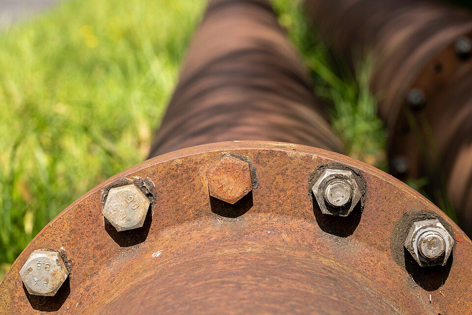
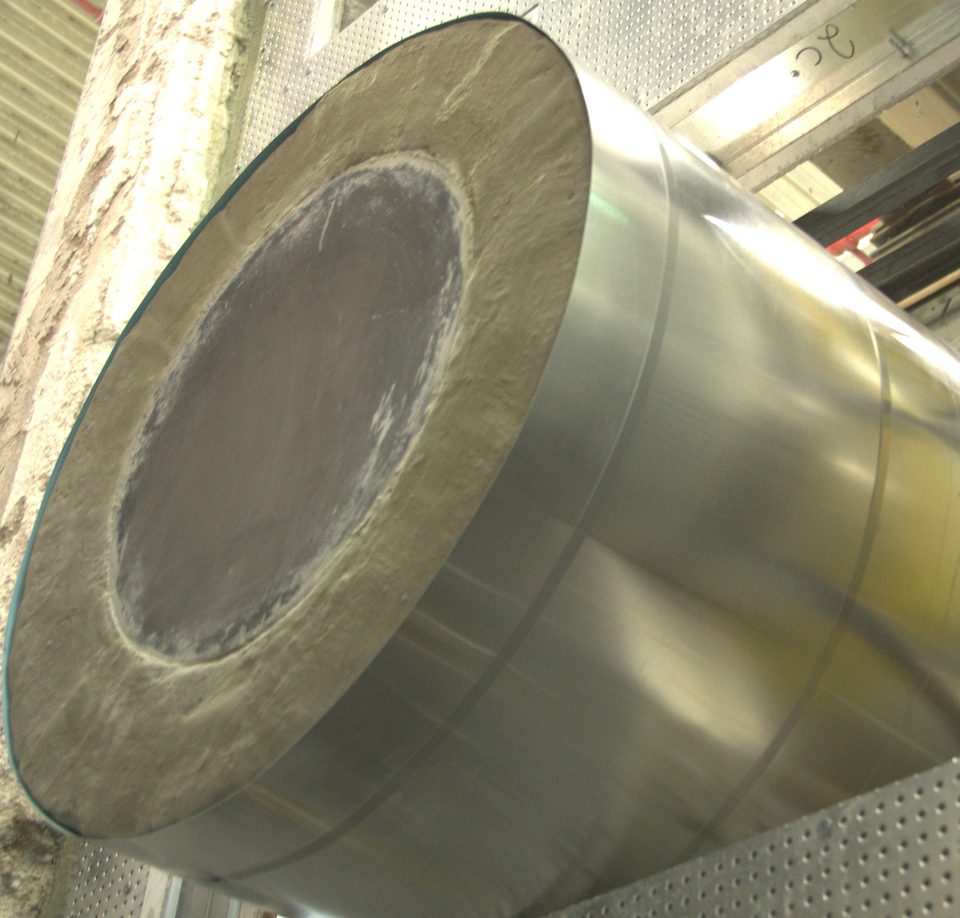
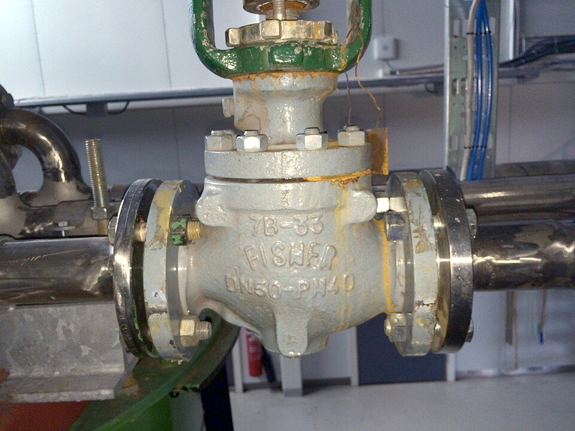
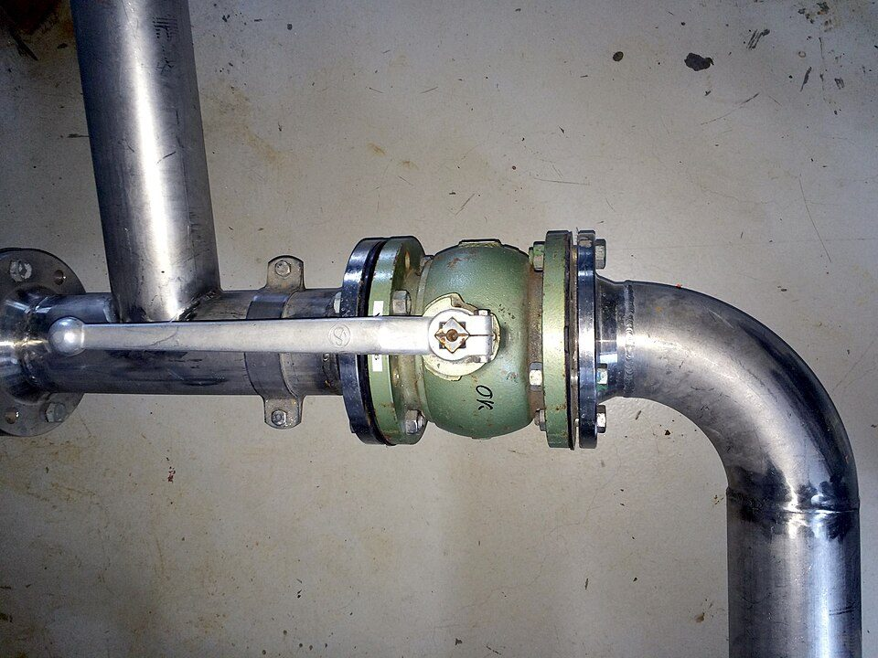

プラント設計で使われる専門用語100選：配管・バルブ・機器・設計条件・配置・計装・図面
要点まとめ
石油・化学などのプラントの設計では、配管・バルブ・機器・法令に関わる専門用語が数多く使われます。この記事では、設計の現場でよく使う100語を7分野に分け、法令や公的機関・業界団体・メーカーの解説をもとに1〜2行で説明しました。英語の略語はプラント業界で使われる英語の略語一覧、装置の仕組みは化学プラントの基本構成と仕組みにまとめています。
用語の定義は、規格（JIS）や会社によって細かく違うことがあります。今回はJISの本文を閲覧できなかったため、法令や公的な解説を優先しました。「※」の付いた語は、出典では名称や使い方だけを確かめたもので、意味は一般的な説明です（筆者の説明）。

配管（34語）
| 用語 | 意味 |
|---|---|
| 1. 呼び径（よびけい） | 配管の内径を基準にして、配管やフランジの大きさを決めた呼び名[1] |
| 2. A呼称・B呼称 | 呼び径の書き方。ミリ単位のA呼称（100Aなど）と、インチ単位のB呼称（4Bなど）[1] |
| 3. 呼び圧力 | バルブやフランジの圧力の区分。10Kは10kgf/cm²（約1MPa）の区分[1] |
| 4. 肉厚（にくあつ）※ | 管の壁の厚さ。圧力配管用の鋼管は、呼び径ごとに厚さが規格で決まっている[5] |
| 5. スケジュール番号※ | 同じ呼び径の管の厚さの段階を表す番号（スケジュール10〜80など）[5] |
| 6. 圧力配管用炭素鋼鋼管※ | JIS G 3454の鋼管（記号STPG）。圧力のかかる配管に使う[5] |
| 7. 配管クラス（配管サービスクラス） | 流体の性質などに応じて、使う管・継手・バルブの材料や仕様をまとめた決まり[6] |
| 8. スペック | 3D配管設計ソフトで、工業規格の部品カタログから作る「使ってよい部品」の設定[7] |
| 9. エルボ※ | 配管の向きを変える曲がった管継手。ロング・ショートなどの種類がある[8] |
| 10. ティー※ | 配管を枝分かれさせるT字形の管継手。同じ径と径違いがある[8] |
| 11. レジューサ※ | 管の径を変える管継手。同心と偏心がある[8] |
| 12. 突合せ溶接※ | 管や継手の端を突き合わせて溶接する接続方法[1][8] |
| 13. 差込み溶接※ | 継手の受け口に管を差し込んで溶接する接続方法[1] |
| 14. ねじ込み（ねじ込形） | 接続する端にねじ山をもつ形式。一般に管用テーパねじを使う[9] |
| 15. フランジ接続 | 接続面にガスケットをはさみ、ボルトで締める接続方法[1] |
| 16. ガスケット | フランジの間にはさんで漏れを防ぐシール材（パッキン）[1] |
| 17. RF形・GF形 | フランジの合わせ面の形。RF形は大平面座で汎用性、GF形は溝形で耐震性にすぐれる[1] |
| 18. 伸縮管継手 | 温度の変化で生じる配管の伸び縮みを吸収する継手[9] |
| 19. ストレーナ | 流体に混じって流れるごみやスケールを取り除く、こし器[9] |
| 20. スチームトラップ | 蒸気が冷えてできた水（ドレン）を排水するための機器[10] |
| 21. ドレン | 蒸気が凝縮してできた水。たまるとウォーターハンマーなどの原因になる[10] |
| 22. ウォーターハンマー（水撃作用） | バルブなどを急に閉めたとき、管の中の圧力が急に変動する作用（水道の基準での定義）[11]。蒸気配管ではドレンがたまって起きる[10] |
| 23. スプリングハンガー | 配管の小さな上下の動きを吸収するため、ばねを使って配管を支える製品[12] |
| 24. コンスタントハンガー | 配管が大きく上下に動いても、ほぼ一定の力で支え続ける吊り具[13] |
| 25. 熱応力解析 | 温度変化による配管の伸び縮みで生じる力を計算し、ルートや支持を決める作業[6] |
| 26. ローディングデータ | 配管がパイプラックやサポートの基礎に与える荷重や反力のデータ。土木の設計に渡す[6] |
| 27. 保温 | 常温より高い温度の配管・機器を保温材でおおい、熱が逃げるのを防ぐこと。JIS A 9501に施工の標準がある[14] |
| 28. 保冷 | 常温より低い温度の配管・機器を保冷材でおおうこと。表面の結露も防ぐ[14] |
| 29. 放出管 | 安全弁や破裂板から出たガスを導いて放出する管。高圧ガスの設備では設置が必要[3] |
| 30. 管板（かんばん）※ | 熱交換器で、多くの管（チューブ）の端を差し込んで固定する板[2] |
| 31. ノズル（機器ノズル）※ | 塔や槽などの機器に配管をつなぐ口。向き（方位）や荷重を配管側と調整する[6] |
| 32. パイプラック※ | 多くの配管をまとめて載せる棚状の構造物。配管の荷重や熱による反力を受ける[6] |
| 33. 腐食しろ※ | 腐食や摩耗で薄くなる分を見込んで、計算上の厚さに足す厚さ（法令では「1mmを加えた厚さ」など）[2] |
| 34. ウェハー形※ | 2枚のフランジの間にはさんで取り付ける、フランジのないバルブの接続形式[1] |

バルブ（15語）
| 用語 | 意味 |
|---|---|
| 35. 弁箱（べんばこ） | バルブの外側の容器で、圧力を受け持つ部分[1] |
| 36. 弁体（べんたい） | 流量を調整する部品[1] |
| 37. 弁棒（べんぼう） | 開け閉めの操作を伝える棒[1] |
| 38. 玉形弁（グローブバルブ） | 流れにくいが、途中の開き具合（中間開度）で使えるバルブ[1] |
| 39. 仕切弁（ゲートバルブ） | 板状の弁体で通路を仕切るバルブ。圧力損失が小さい[9] |
| 40. ボール弁 | 流れやすく、シール性能がよいバルブ[1] |
| 41. バタフライ弁 | 面間が短く、軽いバルブ[1] |
| 42. 逆止弁（チャッキ弁） | 圧力差で弁体が開閉し、流体を一方向にだけ流すバルブ[1] |
| 43. 調節弁 | 流量や圧力などを精密に制御するバルブ[15] |
| 44. 安全弁 | 許容圧力を超えたとき、すぐに許容圧力以下に戻す安全装置の一つ[3] |
| 45. 破裂板（ラプチャーディスク）※ | 安全弁と並ぶ安全装置。決められた圧力で薄い板が破れて圧力を逃がす[3] |
| 46. 緊急遮断装置 | 緊急時に、計器室からの操作や自動で、速やかに遮断する措置[16] |
| 47. 地震防災遮断弁 | 地震時と地震後の災害の発生と拡大を防ぐための遮断機能をもつ弁[16] |
| 48. 手動弁・自動弁 | 人の力で開け閉めするバルブと、自動的に開け閉めや開度の保持をするバルブ[9] |
| 49. 面間（めんかん）※ | バルブの両端の接続面の間の長さ。バルブの種類で大小が違う[1] |

機器（20語）
| 用語 | 意味 |
|---|---|
| 50. 回転機 | コンプレッサーやポンプ、ガスタービンなど、軸を中心に回転する機器[17] |
| 51. 塔（法令の定義） | 高圧ガスの設備で、正接線の間の長さが5m以上のもの（貯槽を除く）[16] |
| 52. 蒸留塔 | 沸点の差を利用して、各留分に分ける塔[18] |
| 53. 反応塔 | 塔の中に詰めた触媒などのもとで化学反応を行わせる機器[18] |
| 54. 槽（ベッセル） | 製造の工程の途中で、一時的にためる・分けるために使う容器[18] |
| 55. 熱交換器 | 2つの流体の間で熱のやりとりをさせる機器[18] |
| 56. 多管式熱交換器 | 胴の中に多くの管を通した熱交換器。プロセス用の大型機器に使う[18] |
| 57. チューブ（伝熱管） | 熱交換器で、2つの流体を隔てる金属の管[18] |
| 58. 固定管板型・遊動頭式 | 多管式熱交換器の型。固定管板型は安価だが管の束を抜き出せない。遊動頭式は最も広く使われる[18] |
| 59. 空冷式熱交換器 | 管の中に流体を通し、外側にファンで空気を送って冷やす熱交換器[18] |
| 60. 加熱炉 | 燃料を燃やして、炉内の管を流れる流体を加熱する機器。ほとんどが管式[18] |
| 61. ポンプ | 外部の動力で液体に運動エネルギーを与え、圧力として取り出して送る機器[18] |
| 62. キャビテーション | ポンプの羽根車の入口で局部的に真空状態ができ、小さな泡が発生する現象[19] |
| 63. 圧縮機（コンプレッサー） | 気体を圧送する機械。ターボ型（遠心式など）と容積型（往復動式など）がある[18] |
| 64. 送風機（ファン・ブロアー） | 圧縮機より低い圧力で気体を送る機械[18] |
| 65. 貯槽（ちょそう） | 高圧ガスの貯蔵設備のうち、地盤面に対して移動できないもの[3] |
| 66. 低温貯槽 | 大気圧での沸点が0℃以下のガスを、液体の状態でためる貯槽[3] |
| 67. 浮き屋根式タンク | 液面に鋼製のふたを浮かべた構造のタンク。揮発しやすいものの貯蔵に向く[20] |
| 68. 浮き蓋付きタンク（インナーフロート） | 固定屋根のタンクの内部に浮き蓋を浮かべた構造のタンク[20] |
| 69. 機器設計の図面（計画図・組立図・部品図） | 機器設計では主な仕様を決めた計画図を作り、詳細設計で組立図・部品図を作る[21] |
設計条件・材料（11語）
| 用語 | 意味 |
|---|---|
| 70. 設計圧力 | 設備を使うことができる最高の圧力として設計した圧力[2] |
| 71. 設計温度 | 設備を使うことができる最高または最低の温度として設定した温度[2] |
| 72. 常用の圧力 | ふだんの使用状態で設備にかかる圧力。変動する場合はその最高の圧力[3] |
| 73. 耐圧試験 | 水などの安全な液体で高い圧力をかけて確かめる試験。一般高圧ガス保安規則は常用の圧力の1.5倍以上、特定設備検査規則は設計圧力の1.5倍以上[3][2] |
| 74. 気密試験 | 常用の圧力以上の圧力で、漏れがないかを確かめる試験[3] |
| 75. 許容引張応力 | 材料にかけてよい引張の力の上限。常温の最小引張強さの4分の1などで決める[2] |
| 76. 非破壊試験 | 壊さずに、内部に有害な欠陥がないかを確かめる試験[2] |
| 77. ステンレス鋼 | クロムを重量で10.5%以上ふくむ、さびにくい鋼[22] |
| 78. 合金鋼 | 炭素鋼にモリブデンなどを加えた鋼[23] |
| 79. 低温脆性（ていおんぜいせい） | 低い温度で、オーステナイト系ステンレスなどを除く鉄系の材料がもろくなる性質[23] |
| 80. 放射線透過試験 | 溶接部の全長などについて、内部の欠陥の有無を調べる非破壊試験の一つ[2] |
配置・構造・土木（8語）
| 用語 | 意味 |
|---|---|
| 81. プロットプラン | 敷地の中に、生産設備・ユーティリティ設備・配管路・倉庫・事務管理棟などをどう置くかの配置計画[24] |
| 82. 機器配置 | 経済性・効率性・保全性・安全性など、ときに矛盾する要求を両立させて機器の位置を決めること[24] |
| 83. 防液堤（ぼうえきてい） | 液化ガスの貯槽から漏れた液の流出を防ぐ堤。内側と外面から10m以内には原則として設備を置けない[3] |
| 84. 防油堤（ぼうゆてい） | 屋外の危険物タンクから漏れた危険物の流出を防ぐ堤[25] |
| 85. 保安距離 | 危険物の製造所などと、住宅・学校などとの間に保つ距離（法令の文言は「距離を保つこと」）[25] |
| 86. 保有空地（ほゆうくうち） | 危険物の施設の周りに確保しておく、決められた幅の空き地[25] |
| 87. 設備距離（第一種・第二種） | 高圧ガスの設備と保安物件の間に必要な距離。貯蔵能力・処理能力に応じて決まる[3] |
| 88. 保安区画 | コンビナートの事業所で、通路や空地などで区切った区域（面積2万m²以下）[16] |

計装・電気（9語）
| 用語 | 意味 |
|---|---|
| 89. 計装（けいそう） | 流量・温度・圧力・液面などを計器で測り、決めた運転条件に合うように操作すること[18] |
| 90. 計器室 | 製造を制御するための機器を集中的に置いた部屋[16] |
| 91. インターロック機構 | 正常な製造の条件から外れたとき、自動的に原材料の供給を止めるなどする仕組み[16] |
| 92. 伝送器 | 測った量を、直流4〜20mAなどの標準の信号に変えて送る機器[26] |
| 93. 調節計 | 伝送器からの信号を受けて、調節弁などを動かす信号を計算する機器[26] |
| 94. 操作端（制御端） | 調節計の信号を受けて、実際にプロセスを動かす部分（多くは調節弁）[26][27] |
| 95. 防爆構造 | 設置場所とガスの種類に応じた防爆性能をもつ電気設備の構造[3] |
| 96. 危険場所の3区分 | 特別危険箇所（ふだんから連続・長時間・頻繁に存在）、第一類（しばしば生成）、第二類（生成しにくく、生成しても短時間）[4] |
| 97. 接地（静電気の除去） | 危険物の設備で、静電気を有効に除去するための接地電極を設けること[25] |
図面・文書（3語）
| 用語 | 意味 |
|---|---|
| 98. データシート※ | 機器などの条件や仕様をまとめた書類。P&IDの後に、プロセス仕様書とともに作る[28] |
| 99. アイソメ図 | 3Dモデルから作る、注釈と寸法を書き込んだ配管の図面。製作用のものもある[29] |
| 100. オルソ図 | 3Dモデルから作る、配管・バルブ・機器・構造用鋼の2次元の図（平面図など）[30] |
今回確認できなかった点
- JIS（バルブ用語・管継手用語・自動制御用語など）の定義。JISのサイトが停止中で、本文を閲覧できなかった
- 勾配・NPSH・マンホール・メンテナンススペース・配管用炭素鋼鋼管（SGP）の、公的な出典での意味
- 安全弁と逃し弁の違い、常用の温度・最高使用圧力・許容圧力の定義文
- 伝送器・調節計などの計装の用語は、1961年・1972年の技術記事でしか確かめられなかった
出典（30件）
閲覧日はいずれも2026年11月10日
- バルブのいろは（1）ー構造と接続方法ー（滋賀県 北部産業技術共創センター）
- 特定設備検査規則（e-Gov法令検索）
- 一般高圧ガス保安規則（e-Gov法令検索）
- 工場電気設備防爆指針（ガス蒸気防爆 2006）（労働安全衛生総合研究所（旧産業安全研究所））
- 建設用資材ハンドブック 4-10 圧力配管用炭素鋼鋼管（日本製鉄）
- 配管エンジニアの業務内容とキャリア形成（千代田エクスワンエンジニアリング）
- AutoCAD Plant 3D ヘルプ「スペックおよびカタログの概要」（Autodesk）
- 建設用資材ハンドブック 4-25 鋼管製突合せ溶接式管継手（日本製鉄）
- 技術資料「1.基礎編」（ベン）
- スチームトラップの仕様と設計（配管技術研究協会誌 2022年）（テイエルブイ）
- 給水装置の構造及び材質の基準に関する省令（e-Gov法令検索）
- スプリングハンガー・サポート（山下製作所）
- コンスタントハンガー・コンスタントサポート（山下製作所）
- ニチアス技術時報「プラント設備の保温保冷材」（2023年）（ニチアス）
- azbil Technical Review 2026（アズビル）
- コンビナート等保安規則（e-Gov法令検索）
- 新卒採用 日揮グループの職種（日揮ホールディングス）
- 製油所の機器・計装の解説（安全に関する知識 No.31）（石油エネルギー技術センター）
- 汎用ポンプに関するFAQ（日本産業機械工業会）
- 屋外タンクの種類（市議会 総務消防委員会資料）（舞鶴市）
- 職業情報【エンジニアリング業】設計「機器設計」（厚生労働省）
- ステンレス鋼 FAQ（日本製鉄）
- バルブのいろは（2）ー加工方法と材料ー（滋賀県 北部産業技術共創センター）
- 職業情報【エンジニアリング業】設計「全体・部分配置計画」（厚生労働省）
- 危険物の規制に関する政令（e-Gov法令検索）
- 計装システムの記事（1972年10月）（日立評論）
- 空気作動式調節計の取扱い（その1）（1961年2月）（日立評論）
- 職業情報【エンジニアリング業】設計「プロセス設計」（厚生労働省）
- AutoCAD Plant 3D ヘルプ「概要 - アイソメ図面」（Autodesk）
- AutoCAD Plant 3D ヘルプ「概要 - オルソ図面(投影図)」（Autodesk）
写真・画像の出典（4件）
- フランジとボルトでつないだ配管
写真: Dietmar Rabich／Wikimedia Commons（CC BY-SA 4.0） - 配管に巻く保温材（ケイ酸カルシウム製）
写真: Achim Hering／Wikimedia Commons（CC BY 3.0） - 調節弁の弁箱
写真: Bitjungle／Wikimedia Commons（CC BY-SA 4.0） - フランジでつないだバルブと、向きを変える配管
写真: Bitjungle／Wikimedia Commons（CC BY-SA 4.0）